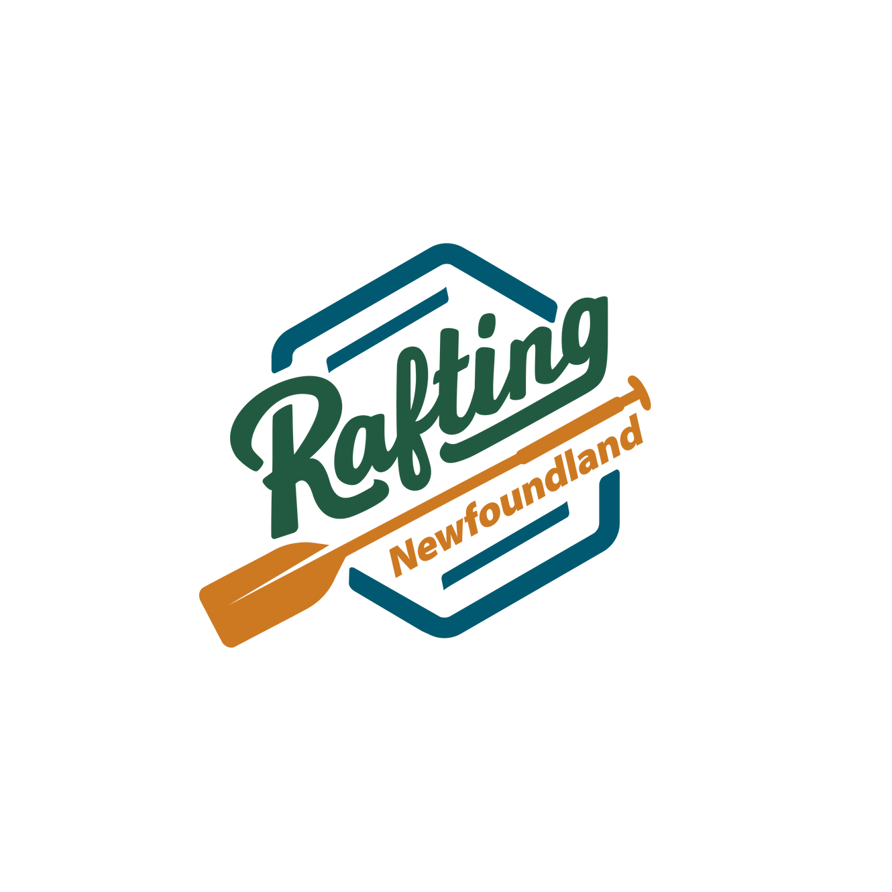
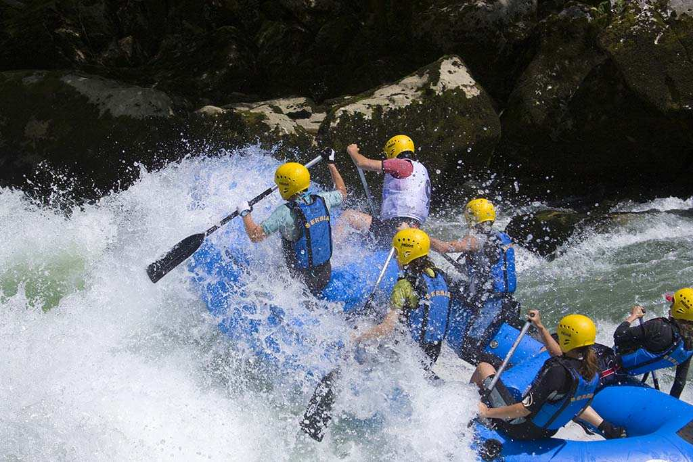
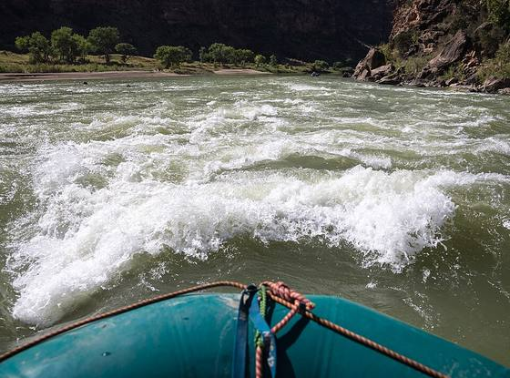
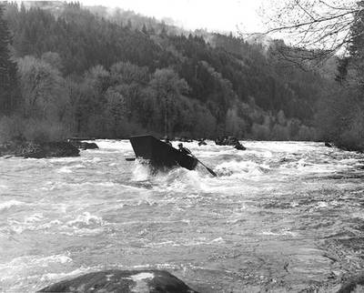
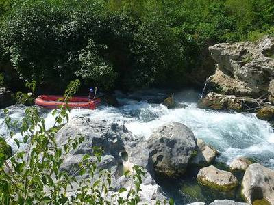
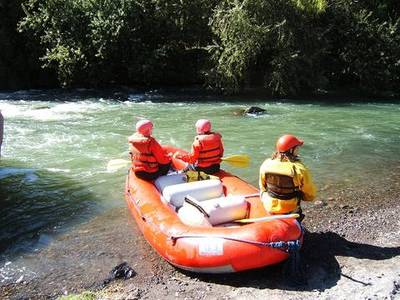
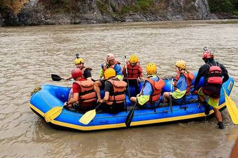
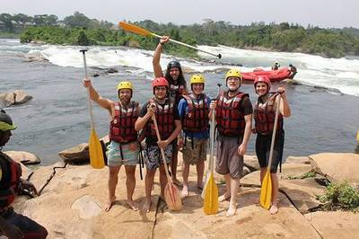

Our mission is simple: share the thrill of the river with everyone. We combine wild water, professional guides, and top-quality equipment on every trip — safety first, adventure always. That is the creed our crew lives by.


Our mission is simple: share the thrill of the river with everyone. We combine wild water, professional guides, and top-quality equipment on every trip — safety first, adventure always. That is the creed our crew lives by.
Splash White Water Rafting began in 1998 with one raft, two guides, and a stubborn belief that the river is best shared. Founders and lifelong friends, the Alvarez brothers started running weekend trips for families in their hometown, and word of their safe, joyful style spread quickly.

More than twenty-five years later, Splash has grown into a full crew of certified guides running trips for first-timers and seasoned paddlers alike — but every trip still starts the same way it did on day one: with a smile, a safety talk, and a splash.




